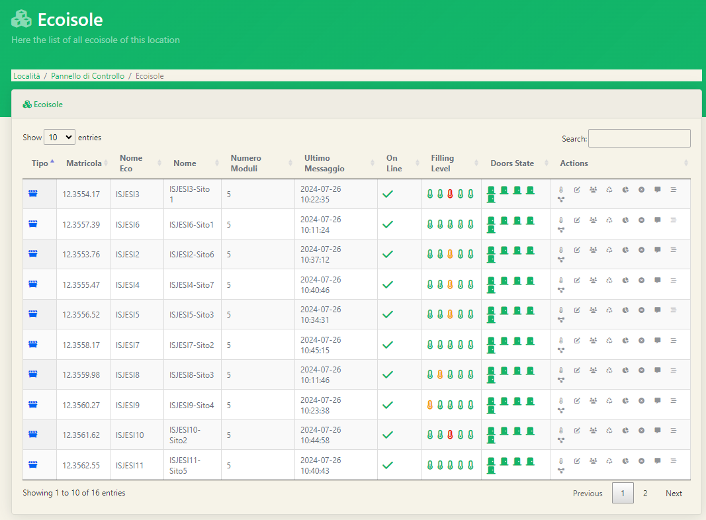
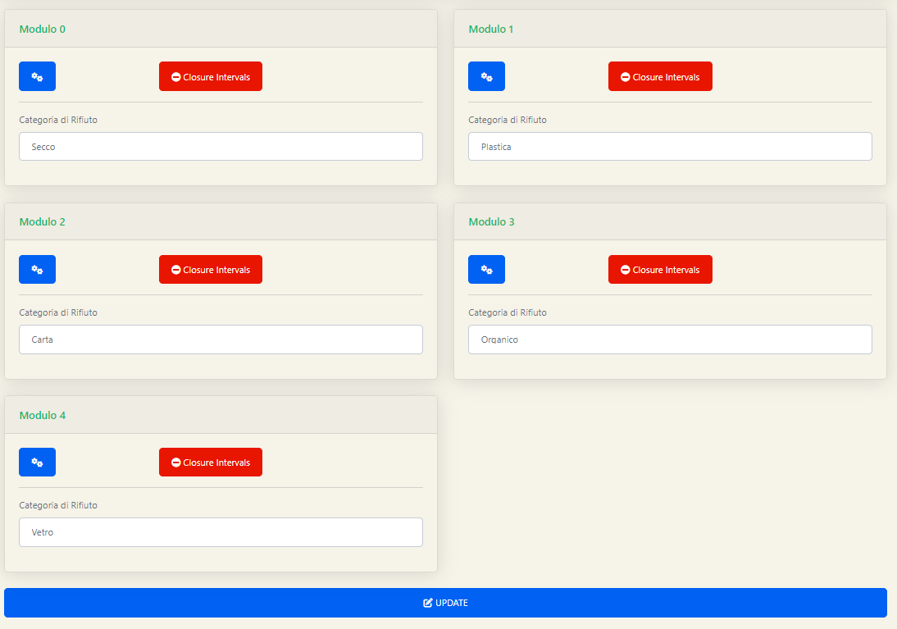

Le Ecoisole
Terminato il lato dell'anagrafica possiamo addentrarci nella sezione dedicata alle macchine; le prime che vedremo saranno proprio le Ecoisole. Cliccando l'apposito tasto sulla Sidebar ci troveremo di fronte alla seguente schermata:  Nella tabella potremmo vedere per ogni Ecoisola delle informazioni già molto significative come per esempio:
- Il nome
- Il numero delle bocchette
- Se la macchina è offline o meno
- Lo stato di riempimento della macchina per ciascun modulo
- Lo stato di apertura/chiusura delle bocchette
Anche in questo caso possiamo notare una colonna Actions con diverse azioni che possiamo eseguire su ciascuna ecoisola. Le azioni verranno elencate tutte ma ne illustreremo solo alcune, le più significative:
- Status
- Modifica
- Accessi
- Conferimenti
- Statistiche
- Intervalli di Chiusura
- Logs
- Circuiti
Status
Verificare lo status di una macchina è la prima azione che possiamo svolgere su di essa. Cliccando sull'icona del termometro all'interno della colonna actions ci troveremo davanti alla seguente schermata
Nella prima parte, quella visibile nella prima foto, possiamo notare una serie di informazioni relative alla macchina che non potranno essere modificate ma solo visualizzate.
Nella seconda parte della pagina invece avremo a disposizione la situazione di riempimento dei moduli aggiornata in tempo reale ogni qual volta verrà eseguito uno svuotamento o un conferimento.
Al di sotto di ciascun modulo sono presenti tre tasti per svolgere tre diverse azioni da remoto:
- Apertura sportello da remoto
- Chiusura sportello da remoto
- Taratura sportello da remoto
Modifica
La seconda azione presente nella colonna Actions è quella di modifica delle informazioni relative all'Ecoisola e modifiche sui singoli moduli. Cliccando sul secondo tasto della colonna actions ci troveremo davanti alla seguente schermata che per semplicità divideremo in due parti. In questa prima parte della pagina potremmo modificare due cose principalmente:
- La geolocalizzazione dell'isola
- Alcune informazioni sull'isola
Modificare la geolocalizzazione dell'Ecoisola
Per modificare la geolocalizzazione dell'Ecoisola bisogna seguire tali passaggi:
- Digitare nella barra di ricerca dell'indirizzo il corretto indirizzo
- Fare click sull'icona della lente d'ingrandimento
- Spostare il cursore rosso nella posizione corretta
- Fare click sul cursore rosso una volta che si sarà trovata la posizione corretta
- Scorrere in fondo alla pagina e fare click sul tasto blu Update
Modificare le informazioni dell'Ecoisola
Generalmente le informazioni presenti nella videata proposta non vengono modificate dall'amministratore del comune;sarebbe possibile però poter modificare il nome dell'Ecoisola per poterle identificare meglio. Basterà quindi recarsi nel campo Nome e digitare il nuovo nome da dare all'Ecoisola; fatto ciò l'amministratore dovrà scorrere in fondo alla pagina e fare click sul tasto blu Update.
La seconda parte della pagina di modifica propone una visuale su tutti i moduli presenti all'interno dell'ecoisola, dove per modulo si intende una singola bocchetta.

Per ogni modulo sarà possibile selezionare la giusta categoria di rifiuto a scelta tra quelle esistenti all'interno della piattaforma. Per ogni modulo, cliccando sul tasto blu accederemo alle informazioni del modulo stesso che potremmo modificare.
 Anche qui le informazioni modificabili sono diverse ma quelle che potrebbero maggiormente interessare l'amministratore comunale sono quelle relative agli alert che invierà la macchina. Il primo campo, livello soglia per l'allarme, indica la percentuale al raggiungimento della quale
verrà inviata una mail all'indirizzo inserito nel campo direttamente di fianco ovvero Email ricezione Allarme. In quest'ultimo campo è possibile inserire più indirizzi mail separati dal carattere ';'.
Nella riga successiva invece vi è indicata la possibilità di bloccare l'ecoisola al raggiungimento di una determinata percentuale che verrà specificata dall'amministratore nel campo di fianco.
Una volta effettuate le dovute modifiche, e fatto click sul tasto chiudi si tornerà nella pagina di modifica dove per salvare quanto effettuato basterà cliccare sul tasto blu Update.
Anche qui le informazioni modificabili sono diverse ma quelle che potrebbero maggiormente interessare l'amministratore comunale sono quelle relative agli alert che invierà la macchina. Il primo campo, livello soglia per l'allarme, indica la percentuale al raggiungimento della quale
verrà inviata una mail all'indirizzo inserito nel campo direttamente di fianco ovvero Email ricezione Allarme. In quest'ultimo campo è possibile inserire più indirizzi mail separati dal carattere ';'.
Nella riga successiva invece vi è indicata la possibilità di bloccare l'ecoisola al raggiungimento di una determinata percentuale che verrà specificata dall'amministratore nel campo di fianco.
Una volta effettuate le dovute modifiche, e fatto click sul tasto chiudi si tornerà nella pagina di modifica dove per salvare quanto effettuato basterà cliccare sul tasto blu Update.
Nella seconda parte della pagina di modifica per ciascun modulo è permesso anche indicare un intervallo di chiusura della bocchetta cliccando sul tasto rosso e seguendo la sintassi proposta a schermo per indicare l'intervallo. Anche in questo caso per confermare le modifiche sarà necessario cliccare il tasto bluUpdate.
Accessi
La terza azione che è possibile svolgere per ciascuna Ecoisola è il settaggio degli accessi alla macchina. Mediante i due tasti Imposta accesso e Elimina Accesso è possibile settare o meno l'accesso all'ecoisola ad una determinata categoria di utenze. Nella parte in basso della pagina la tabella che viene proposta racchiude tutte le utenze al momento abilitate a quella macchina.
Conferimenti
Come quanto visto per la sezione Utenze, cliccando sul simbolo del riciclo per ciascuna ecoisola potremmo vedere i conferimenti effettuati dai vari utenti già filtrati per Ecoisola.